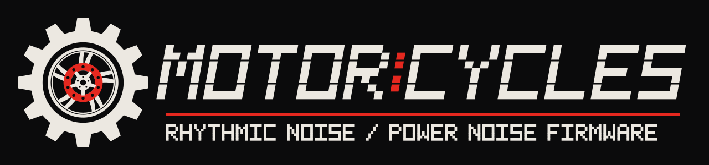

Motor:Cycles patcher
Turns your own copy of the official Model:Cycles OS 1.13 firmware into Motor:Cycles, right here in your browser. Nothing is uploaded and nothing is installed.
.syx here
or click to choose the file
How to install
- Download the official Model:Cycles OS 1.13 firmware from elektron.se and unzip it.
- Drop its
.syxfile above. The patcher checks it and builds Motor:Cycles. - Save the result, then send it to your Model:Cycles with Elektron Transfer, as you would an official update.
Back up your projects first. To go back, install the official OS 1.13 the same way.
How it works
The patcher only accepts the official OS 1.13 file. It rebuilds the firmware exactly the way the released build was made: the Modded-Cycles mods first, then Motor:Cycles on top. It checks every stage against known checksums, so the result is byte for byte the file tested on a real Model:Cycles, or nothing is produced. No Elektron code is distributed: the patch kit holds only Motor:Cycles and Modded-Cycles changes. Your file never leaves your computer.
What Motor:Cycles adds, and how to use it: the project on GitHub.